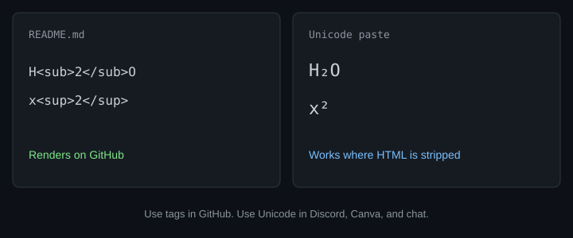

Markdown has no native subscript
Two working methods: On GitHub, write H<sub>2</sub>O and x<sup>2</sup>. Everywhere HTML is stripped, paste Unicode H₂O and x² from the subscript generator or superscript generator.
Plain Markdown (see Markdown Guide, Basic Syntax) has no _2 subscript token. Tilde (~text~) is strikethrough on GitHub, not subscript. Pick the method that matches the renderer.
How to write subscript in Markdown with HTML
GitHub Flavored Markdown allows a short list of HTML tags, including <sub> and <sup>:
- Water:
H<sub>2</sub>O→ H2O - Squared:
x<sup>2</sup>→ x2 - Footnote marker:
note<sup>1</sup>
This is the cleanest option in a README, issue, or GitHub wiki. It stays editable as normal ASCII in the source file.
How to write Markdown subscript with Unicode
Many chat apps, some static-site pipelines, and Discord strip HTML. Then the tags show as literal <sub>. Paste characters instead:
- Generate H₂O or x² with the matching tool.
- Paste into the
.mdfile or the chat box.

Markdown subscript and superscript cheatsheet
| Place | Use | Example |
|---|---|---|
| GitHub README | HTML tags | H<sub>2</sub>O |
| Discord / many chats | Unicode paste | H₂O · x² · ʰᵉˡˡᵒ |
| Reddit (new) | Often Unicode; HTML varies | Paste H₂O |
| Obsidian | HTML in reading view, or Unicode | Same tags or paste |
| Overleaf / LaTeX | Math mode, not Markdown | H_2O inside $...$ |
Markdown small text (not subscript)
Tiny aesthetic letters (ʰᵉˡˡᵒ) are not Markdown syntax and not chemistry subscript. There is no <small> you can rely on in GitHub READMEs for that look. Generate them with the small text generator and paste. For Discord-only steps, see how to make small text in Discord.
Markdown vs LaTeX (Overleaf)
If you are in Overleaf, you are not in Markdown. Write $H_2O$ and $x^2$ in math mode. Do not mix that syntax into a GitHub README unless the repo uses a math renderer. This page stays on Markdown on purpose so it does not compete with a future LaTeX guide.
Related guides
FAQ: Markdown subscript
Is ~2~ subscript in Markdown?
No. On GitHub, single tildes are not a subscript API. Double tildes are strikethrough.
How do I write superscript in Markdown?
x<sup>2</sup> on GitHub, or paste x². Definition of superscript: what is superscript.
Will Unicode break my Git diff?
It is still one character per glyph. Diffs stay readable. Prefer HTML tags in a repo if teammates edit formulas often.